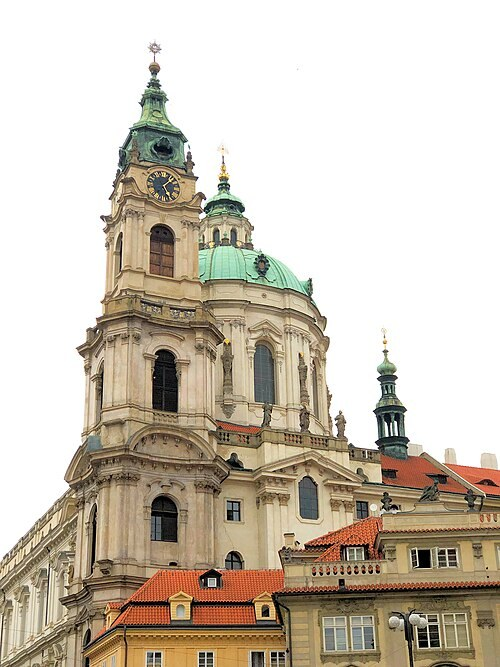

Kisoldali Szent Miklós templom (Kostel svatého Mikuláše)
A kisoldali Szent Miklós templomba lépve először álljunk meg a hajóban, és hagyjuk, hogy a teljes tér hasson ránk. A falak, a pillérek és a boltozatok szinte hullámzó mozgást keltenek. A barokk építészet itt nem egyetlen homlokzati díszben, hanem az egész tér megszervezésében válik érzékelhetővé. A fény és a freskók ugyanennek az élménynek részei.
Az épület a Dientzenhofer család és Anselmo Lurago nevéhez kapcsolódik. Kryštof Dientzenhofer, majd fia, Kilián Ignác folytatta a nagy építkezés különböző szakaszait. A templom a jezsuita rend és a barokk katolikus megújulás prágai világában született. Elődje jóval szerényebb középkori templom volt ugyanazon a központi helyen.
Nézzünk fel a kupola irányába, és kövessük a festett felületek határait. A valós építészet és a festészet tudatosan egészíti ki egymást. Nem mindig azonnal világos, hol ér véget a tényleges fal, és hol kezdődik a képi tér. A templom így a látogató érzékelését is aktívan alakítja.
A márványhatású felületek, az aranyozás és a szobrok a részletek szintjén is gazdag világot alkotnak. Érdemes egyetlen oltárnál megállni, mielőtt újra a teljes térre nézünk. A kisebb kompozíciókban ugyanaz a mozgás és drámaiság jelenik meg, mint az egész épületben. A részletek és az összkép ezért kölcsönösen erősítik egymást.
Mozart prágai tartózkodásához a templom orgonája is kapcsolódik. Az itt őrzött zenei emlékezet a város különösen eleven Mozart kultuszának egyik része. Egy ilyen térben a zene hatása könnyebben elképzelhető, még akkor is, ha éppen csend van. Gondoljunk arra, hogyan töltheti be a hang a kupola alatti nagy belsőt.
A templomot ne keverjük össze az Óvárosi téren álló másik Szent Miklós templommal. A közeli harangtorony látogatása is külön helyszínként és eltérő rend szerint működik. Kifelé menet forduljunk vissza egyszer a hajó tengelyében. A barokk tér hatása ekkor gyakran még erősebb, mert már felismerjük azokat a részleteket, amelyek az első pillanatban egyetlen gazdag látvánnyá olvadtak össze.
50.088000, 14.403200